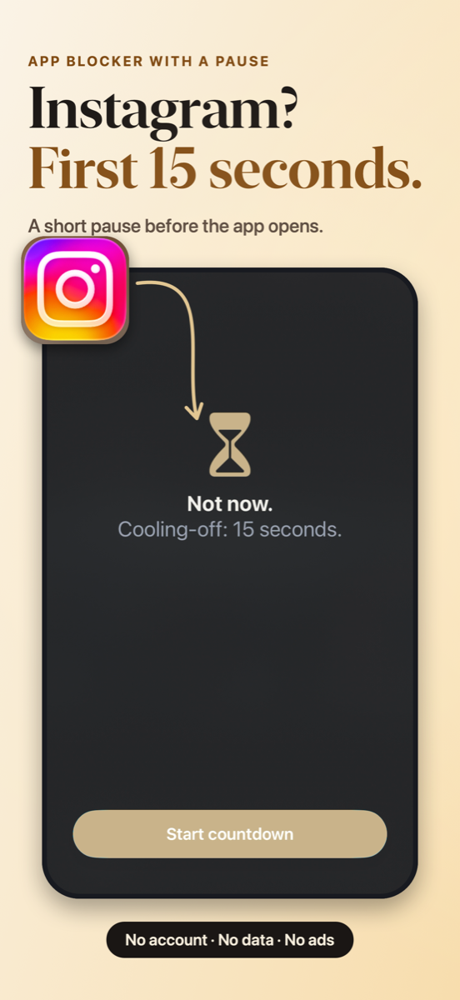
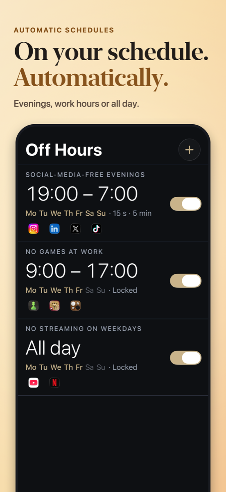
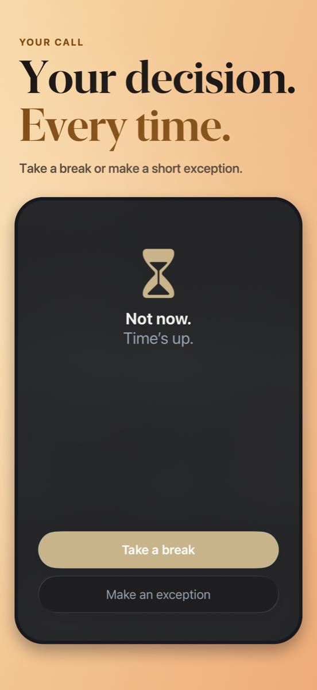
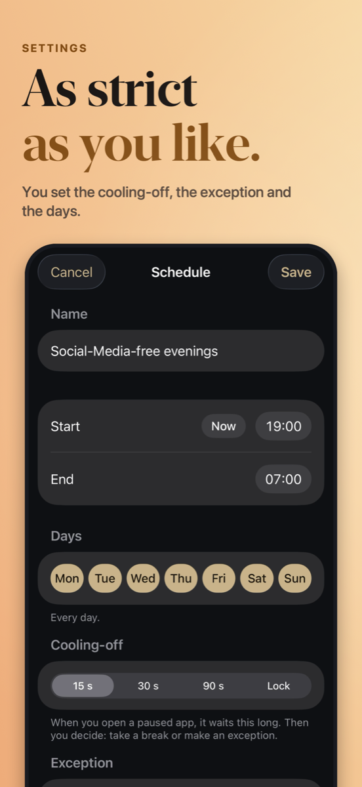
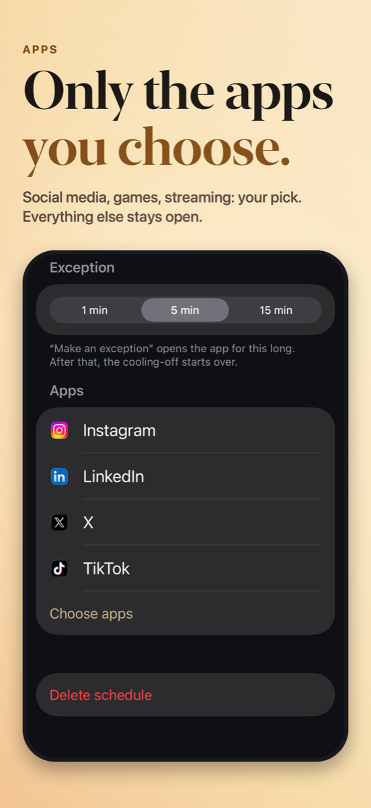
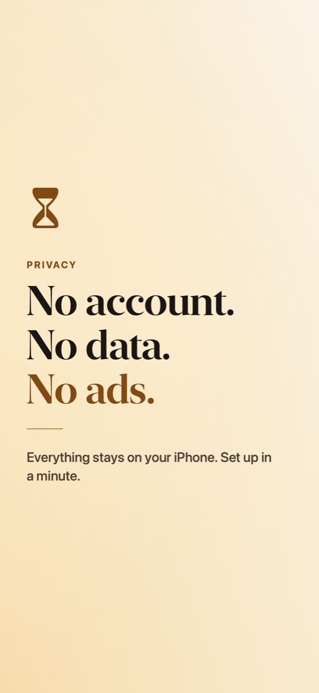

App blocker with a pause
Instagram? First 15 seconds.
A short pause before the app opens.
App blocker for iPhone and Android
Off Hours holds the apps that keep you up at night during the hours you set. When you open one of them, your phone first shows a short cooling-off. Then you decide on purpose: take a break, or make an exception. No ban, no tricks, just a moment to think.

Free. Off Hours Plus €9.99 a year or €3.99 a month (Austrian price; Apple and Google convert it for each country, the exact price is shown in the app).






App blocker with a pause
A short pause before the app opens.
Your call
Take a break or make a short exception.
Apps
Social media, games, streaming: your pick. Everything else stays open.
Automatic schedules
Evenings, work hours or all day.
How it works: on iPhone, Off Hours uses Screen Time in iOS. On Android, Off Hours uses the accessibility service, which you turn on once. From then on the cooling-off starts on time, even when Off Hours is closed.
iOS 17 or later · uses Screen Time
Android 8.0 or later · uses the accessibility service
Settings
You set the cooling-off, the exception and the days.
€0
One schedule with up to two apps, a 15-second cooling-off and a 5-minute exception.
€9.99 a yearor €3.99 a month
Austrian prices; Apple and Google convert them for each country, the exact price is shown in the app. Plus is available as a yearly or monthly subscription. The subscription renews automatically until you cancel it: on iPhone in Settings under Apple Account › Subscriptions, on Android in Google Play under Payments and subscriptions. A subscription applies only to the platform you bought it on.
Privacy
No account, no server, no analytics. Everything stays on your phone.
Off Hours stores the apps you choose only as encrypted identifiers from iOS. Only the shield receives an app's name, to display it. Off Hours does not see how long you use apps, and it records nothing.
Off Hours uses Android's accessibility service only to notice which app is in front, and then shows the cooling-off over it. It does not read screen content, does not see what you type and records nothing. Off Hours does not see how long you use apps.
No. Apple's Downtime blocks apps during set hours. Off Hours builds on Screen Time and puts a cooling-off with a decision in front of the app instead of a ban: take a break, or make an exception. Off Hours is a separate app by nxtChange Consulting FlexCo, not by Apple.
No. You set the time window yourself, for example 21:00 to 07:00, on the days you choose: evenings, work hours or all day. The free tier has one schedule; Off Hours Plus adds more, for example for weekends.
An Android phone with Android 8.0 or later and Android's accessibility service, which you turn on once in Settings. Android has no Screen Time interface for other apps, and without a device-admin or enterprise profile there is no other way to show a cooling-off over another app at a scheduled time.
Off Hours uses the accessibility service only to notice which app is in front, and then shows the cooling-off over it. It does not read screen content, does not see what you type and records nothing. Before the app sends you to the accessibility settings, it explains this in a dialog.
No. No account, no server, no analytics: everything stays on your phone. On iPhone, Off Hours stores the apps you choose only as encrypted identifiers from iOS; only the shield receives an app's name, to display it. On Android, the accessibility service handles only the package name of the app in front and does not store it. Off Hours does not see how long you use apps, and it records nothing.
Yes. Off Hours is an aid, not a safeguard against yourself. Any schedule can be switched off at any time. If you want it stricter, Off Hours Plus offers a cooling-off of 30 or 90 seconds or locks the apps until the schedule ends.
Off Hours is free with one schedule for up to two apps, a 15-second cooling-off and a 5-minute exception. Off Hours Plus costs €9.99 a year or €3.99 a month (Austrian price; Apple and Google convert it for each country, the exact price is shown in the app). The subscription renews automatically until you cancel it.
No. Off Hours pauses apps, not websites. Whether notifications from a paused app appear is up to the system.
On iPhone with iOS 17 or later and on Android phones with Android 8.0 or later. Off Hours is available on the App Store and Google Play, in English and German.
Material for coverage, free to use without asking. Questions and review access: apps@nxtchange-consulting.com
Off Hours is an app for iPhone and Android from Graz, Austria, that holds the apps you choose during the hours you set and adds a short cooling-off first. Users then decide on purpose: take a break or make an exception. On iPhone, Off Hours uses Screen Time; on Android, the accessibility service. The app needs no account, no server and no analytics; all data stays on the device. Off Hours is free with one schedule for up to two apps; Off Hours Plus extends it. The developer is nxtChange Consulting FlexCo.
Download the press kitZIP with all 13 files, 17.9 MB